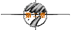
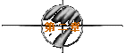

※第一次的亲密接触※
written by jht.

『长发飘扬的女孩....你也好....』
我心里一直希望她飞扬的是头发，而不是裙子。所以自然而然的，
就觉得她该有一头长发。上帝保佑，千万别让我猜错。
「咦？....你怎么知道我留长发？」
Bingo！ 竟然被我ㄨ到，太好了，可以证明她不是花痴了。这情景
，怎一个爽字了得！
『我不仅知道你留长发....我还知道你不常穿裙子....』
要赌，当然就赌大一点，要是再让我ㄨ到，天下就准备太平了。
「咦again？....连本姑娘不喜欢穿裙子你也知道？」
老天ㄚ！何苦如此厚待我？我只不过比别人多一份老实，比别人多
一份诚恳，犯不著如此奖励我吧!?
『我只是觉得你一定有双美腿....所以不应让裙子遮住你的曲线....』
阿泰的特训果然有用，他说男人一定要学会甜言蜜语，
『心情好点了吗？....美丽的轻舞飞扬小姐....』
虽然我很好奇她到底为何心情不好？但绝不能直接问她。因为当女
孩心情不好时，情绪是很不稳定的，单刀直入的问法会她让她觉得
烦躁火大。万一她刚被二一，或是刚告别处女，或是刚踏到狗屎，
我一定会被她骂得满头包。所以，换个方式问，比较合乎孙子兵法
的"迂回进击"和"诱敌深入"。而且看在我说她美丽的份上，所谓不
看僧面看佛面，她也不至于当场翻脸吧!?
「嗯:)....好多了....可爱的痞子先生....」
可爱？这种形容词虽不满意，但还可以接受，不过痞子再怎么可爱
也还是痞子。明天得再想个优雅一点的昵称了。
『知道你心情变好....我的心情也跟著好转....你说奇怪不奇怪？』
刚才埋设的伏笔，现在可以派上用场了。而且明明是拍女孩的马屁
，却装作一付无辜的样子，正所谓“拍而示之以不拍”，也是独孤
九剑中“无招胜有招”的真谛。
「呵:)....痞子....我该睡了....明早十点上站....陪我吗？」
由她的反应看来，刚才拍的那个马屁，无论是力道与施力点，都是
恰到好处。跟阿泰在一起这么久，日子倒也没有白过。
『赴汤蹈火....尚且不辞....何况陪你聊天乎？』
天ㄚ！我怎么会突然冒出一句这么有深度的话呢？这句话大概可以
列入网路年度十大佳句了。我想唐伯虎复生，也不过如此吧!?虽说
我是受到阿泰的薰陶，但我已经青出于蓝而胜于蓝了。更难得的是
，我说这句话时，敲键盘的手竟然一点也不会发抖，看来我的确有
在情场中打滚的天份。我深深地被自己的天赋异禀所感动......
「呵:)....那么明早见了....晚安....痞子」
『小小吐槽一下....应是今早见....晚安you too』
离了线，忍不住想学电视里的广告大叫：“我出运了..我出运了”
。看来这次打击，有希望能敲出一只安打。而研究室的窗外，那只
野猫的叫春声又更响了......
《ㄚㄚ□....给我一杯壮阳水....换我一夜不下垂..》，
听到这首改编自刘德华"忘情水"的变态歪歌，就知道是阿泰回来了，
看来今夜又有个女孩惨遭毒手。
阿泰常说他不是不想定下来，只是他条件太好，反而会让女孩子
有不安全感。所以他说，《余岂好色乎...余不得已也...》。
这当然是狡辩，但其实很多男人或多或少都有阿泰的性格。
所差别的只是条件不够，无法风流而已。
我告诉阿泰，我刚遇见轻舞飞扬了。
《恭喜恭喜...如此际遇...岂能无酒？..》
开玩笑，我明天还得早起，喝酒会误事的。
《也对...等你失恋时再喝..》
哇ㄌㄟ...你这样彷佛是在诅咒我..
《我干嘛还彷佛...我根本就是在诅咒你..》
horse's，要不是看在我打不过你的份上，你早就血溅五步了。
《痞子...别生气...我用的是心理学上的洪水猛兽法...在你有所期待时，
狠狠地泼你冷水...你才能步步为营，攻城略地..》
其实这样也对，要不是这桶冷水，我一定会得意忘形。
我是个日夜颠倒的人，早上10点以前起床对我而言，是有点难度。
『阿泰...明早叫我起床..』
《细细回忆...你的淫荡...彷佛见你...床上模样..》
他改唱刚泽斌的"你在他乡"。看来，别指望他了。
所以，我调了两个闹钟，一个放床边；一个放在离床最远的角落。
这样我才能确保闹钟不会只叫醒我的食指。
「痞子...这么巧..」
还好，虽然睡过头，但仍然准时在10点上了线。
『是ㄚ...怎么这么巧..』
女孩子真是奇怪的动物，明明是早就约好的事，偏要装作一付
偶然邂逅的样子。大概是琼瑶的小说看太多的缘故吧！
她们总觉得靠缘份邂逅的男人最美好。
而且男人的美好程度会跟邂逅的浪漫程度成正比。
「痞子...你在吹牛..」
吹牛？..好，我说给你听。举例而言，
在夏天的海滩边邂逅的男子一定要会跑步，要有粗犷的长相，
要有古铜泛红的皮肤，要有海水般明亮的双眼，最好还要有爽朗的笑声。
然后一面呼喊著女主角的名字，一面朝她飞奔，再抱起她逆时针转三圈。
「痞子...你再吹ㄚ..」
不喜欢夏天？..好，换个季节。
在秋天的街道上邂逅的男子一定要带副眼镜，要有斯文的书卷味，
手里要抱著一本诗集，最好要踩著满地的落叶，发出沙沙的声响。
然后嘴里轻轻吟著雪莱或叶慈的诗，再深情地告诉女主角她比诗还美。
「痞子...你在乱掰ㄛ..」
我在掰？..好，不说时间的邂逅，改用地点的邂逅。
在无人的山中邂逅的男子一定要留长发，要有艺术家的特质，
要带著一个画架、几张画布，最好要有很多小鸟停在他身旁看他作画。
然后女主角也许脱光光当他的模特儿，或静静地欣赏著他的专注。
「痞子...你吃错药了..」
吃错药？..好，换个比较文明的地点。
在喧闹的酒吧中邂逅的男子一定要有胡渣，要有颓废的气息，
嘴里要叼根烟，要喝烈酒而不是台湾脾酒，最好还要有双冷峻的眼神。
然后女主角应该会被酒醉的人调戏，而他则英勇而适时地打跑这些人。
「痞子...这些都很浪漫ㄚ..」
浪漫？..小姐，浪漫也许只是存在于小说中的情节而已。
现实生活中，在海边跑步的男子可能会踩到玻璃，然后送去急诊。
或是女主角太重，以致他的手臂产生肌肉拉伤的运动伤害。
踏著满地秋天落叶的男子可能会踩到狗屎，因为落叶堆内狗屎多。
狗屎由于太臭了，所以他可能不吟诗而改吟三字经。
在无人山中作画的男子，旁边的小鸟可能会拉屎在他头上。
或是当女主角脱光光时，他会嫌腰部和臀部赘肉太多，而被她痛殴一顿。
而在喧闹酒吧中喝烈酒的男子，可能钱会带不够，而被留下来洗碗。
或是跟人打架时，反而被人打跑，因为没有理由好人就会打赢架。
「痞子...你跟浪漫有仇吗？..」
跟浪漫有仇？..当然不是，我只是以统计学的观点得出一些结论而已。
因为以上各类型的男子，无论是健康型、斯文型、艺术型与颓废型，
他们最大的共通点竟然是高，而不是帅！
有的爱情小说会颠覆男主角的形象，让他长得不够好看。
但没人敢让男主角不高。
因为我不高，所以我要抗议。
「痞子...抗议驳回..」
我真的不是普通的无聊与乏味，竟然在网路上跟她讨论这些。
而且一聊就聊到中午。
「痞子...肚子饿了吗？..」
『是ㄚ...那你呢？..』
「嗯...的确该吃午餐了...痞子...」
『那我们是否该....？..』
「痞子...我只是问问...没有要请你吃饭的意思...」
很好，我不浪漫。而你也不浪漫...
中午跟阿泰吃饭，我们聊起了早上和轻舞飞扬的对谈。
《你真是白痴...你干嘛强调你不浪漫？...你头壳坏掉？..》
阿泰劈头就是一顿臭骂，而且一发不可收拾..
《我的脸都让你丢光了...你怎会犯了兵家大忌呢？..我...我...》
阿泰夹起一块鸡翅，拿筷子的手气得发抖，使得那块鸡翅好像要展翅飞翔..
《把马子有三大忌...一曰不浪漫...二曰太老实...三曰嘴不甜...
其中又以不浪漫为首...任何罪恶与不浪漫抵触者无效...没听过吗？..》
当然没听过，我只听过任何法令与宪法抵触者无效。
《男人不坏...女人不爱...总该听过吧？...》
这句话一直有争议性，怎会没听过!?...
《其实女人又不贱...干嘛非得去喜欢坏男人？...
那是因为坏男人通常很浪漫...而好男人通常不解风情...
所以她宁可选择坏而浪漫的男人...也不愿选择好而不浪漫的男人...
这叫两害相权取其轻也的道理...懂吗？...痞子..》
这样我就懂了。
难怪我一直是孤家寡人，而阿泰身旁的女人总是取之不尽，用之不竭。
子曰：“朝闻道，夕死可矣”，我想我终于可以瞑目了。
《换言之...女人可以不介意你不够高..可以不在乎你不够帅..
可以忍受你不够温柔体贴...可以接纳你不够细心呵护..
可以宽恕你不够聪明有趣...但绝不能原谅你不够浪漫...》
太扯了吧！..那有这么夸张。
《痞子...很多女人有浪漫情结...就像很多男人有处女情结一样...
对女人而言，她们无法想像小小一层薄膜对男人有多么重要...
正如我们也无法想像浪漫对她们有多么重要一样...》
乱讲！我从来没听过谁有处女情结，更没听过谁有浪漫情结。
《情结也者...重点在结这个字...你能解得开，就不叫结了..
男人当然也知道处女情结不仅无知可笑自私与不公平，
但能不能解开这个结是一回事...肯不肯承认自己有这种结的存在，
又是另一回事....同理可证...女人亦复如此..》
可是网路上每次讨论到处女情结时，大家都觉得有这种观念的男人，
是又笨又混蛋又欠揍，不是吗？
《痞子...你只知其一...不知其二...
如果谈到处女情结时...女性当然义愤填膺...这是可以理解的事...
但男性呢？..有几个人敢带种地当众承认自己有处女情结？..
而且如果女孩们都相信男人非处女不娶，于是死守著她们的贞操，
那像我这种人不就不用混了？..
因此于公于私...我们都必须让女人相信处女是不重要的...
所以我在网路上post的第一篇文章就是誓死唾弃处女情结的存在..》
原来如此。
待续
| 

 
